Complete reference documentation for all GMT plotting and processing modules.
GMT.jl Extensions
Additional plotting functions and data access utilities that extend GMT’s core capabilities
Core Programs
blockmean 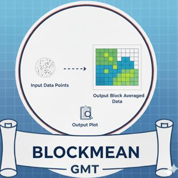
Block average (x,y,z) data tables by mean estimation.
blockmedian
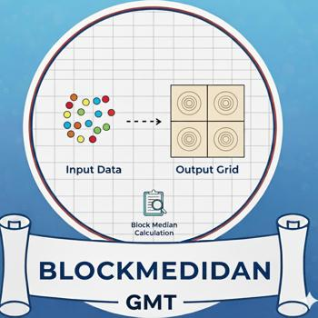
Block average (x,y,z) data tables by median estimation
blockmode

Block average (x,y,z) data tables by mode estimation
clip
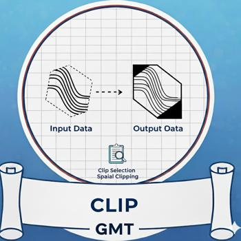
Initialize or terminate polygonal clip paths
coast
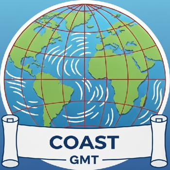
Plot continents, countries, shorelines, rivers, and borders
dimfilter

Directional filtering of grids in the space domain
events
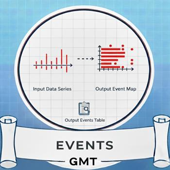
Plot event symbols, lines, polygons and labels for one moment in time
fitcircle
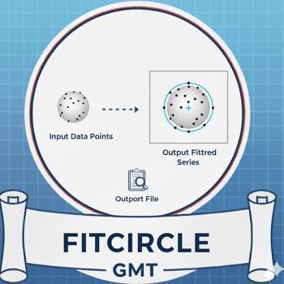
Find mean position and best-fit great or small circle
gmt2kml
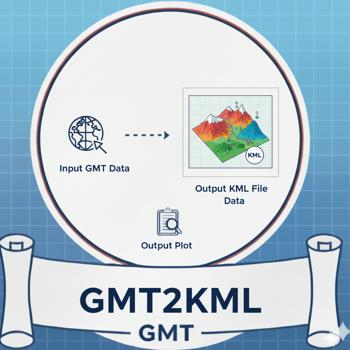
Convert tables to KML files for Google Earth
gmtconnect
Connect individual lines whose end points match
gmtinfo
Get information about data tables
gmtmath
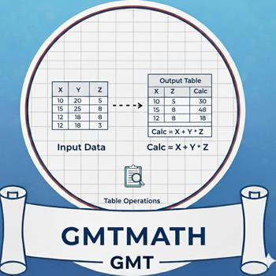
Reverse Polish Notation calculator for data tables
gmtselect
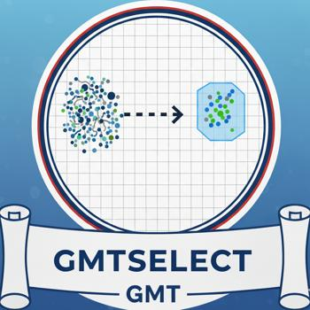
Select data table subsets based on multiple spatial criteria
gmtset
Change individual GMT default parameters
gmtsplit
Split xyz[dh] data tables into individual segments
gmtwhich
Find full path to specified files
grd2cpt
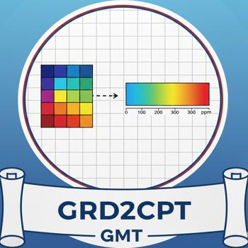
Make linear or histogram-equalized color palette from grid
grd2kml
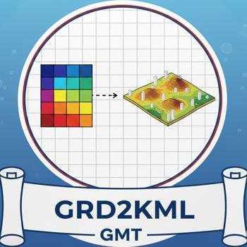
Create KML image quadtree from single grid
grdfft
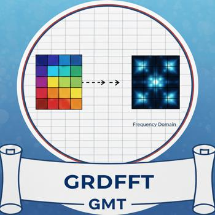
Mathematical operations on grids in the spectral domain
grdlandmask

Create “wet-dry” mask grid from shoreline data base
grdmask
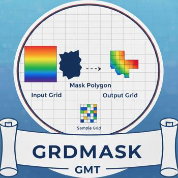
Create mask grid from polygons or point coverage
grdmath
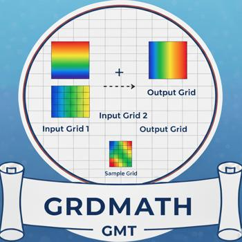
Reverse Polish Notation calculator for grids
grdtrend
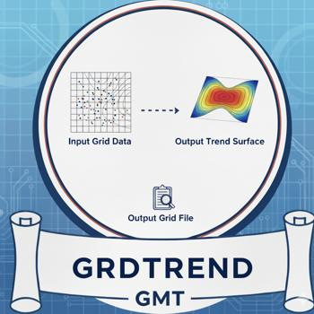
Fit trend surface to grids and compute residuals
grdview
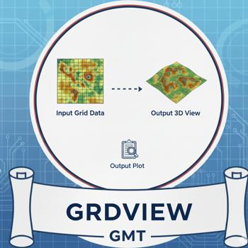
Create 3-D perspective image or surface mesh from a grid
grdvolume
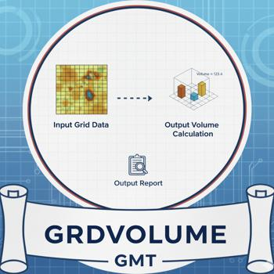
Calculate grid volume and area constrained by a contour
inset
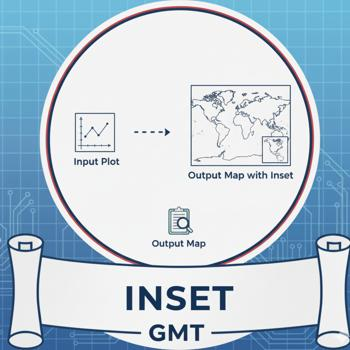
Manage figure inset setup and completion
kml2gmt
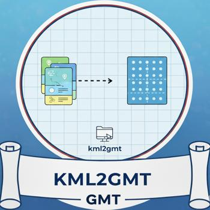
Extract GMT table data from Google Earth KML files
mapproject
Forward and inverse map transformations of 2-D coordinates
mask
Clip or mask map areas with no data coverage
movie
Create animation sequences and movies
nearneighbor
Grid table data using a “Nearest neighbor” algorithm
plot
Plot lines, polygons, and symbols
plot3d
Plot lines, polygons, and symbols in 3-D
project
Project data onto lines or great circles
rose
Plot a polar histogram (rose diagram)
sample1d
Resample 1-D table data using splines
solar
Plot day-light terminators and other sunlight parameters
spectrum1d
Compute auto- and cross-spectra from one or two time series
sph2grd
Compute grid from spherical harmonic coefficients
sphdistance
Create Voronoi distance, node, or natural nearest-neighbor grid on a sphere
splitxyz
Split xyz[dh] data tables into individual segments
subplot
Manage modern mode figure subplot configuration and selection
surface
Grid table data using adjustable tension continuous curvature splines
ternary
Plot data on ternary diagrams
trend1d
Fit a polynomial trend to time series
trend2d
Fit a polynomial trend to grids
triangulate
Delaunay triangulation or Voronoi partitioning and gridding
wiggle
Plot z = f(x,y) anomalies along tracks
xyz2grd
Convert data table to a grid
Supplements
earthtide
Compute grids or time-series of solid Earth tides
img2grd 
Extract a subset from an img file in Mercator or Geographic format
flexure 
Compute flexural deformation of 2-D loads, forces, and bending moments.
segy2grd
Converting SEGY data to a grid.
grdrotater
Finite rotation reconstruction of geographic grid.
gpsgridder
Interpolate GPS velocities using Green’s functions for elastic deformation.
gravfft
Spectral calculations of gravity, isostasy, admittance, and coherence for grids.
grdspotter
Create CVA grid from a gravity or topography grid.
velo
Plot velocity vectors, crosses, anisotropy bars and wedges.
magref
Evaluate the IGRF or CM4 magnetic field models.
gravmag3d
Compute the gravity/magnetic anomaly of a 3-D body by the method of Okabe.
hotspotter
Create CVA grid from seamount locations.
gravprisms 
Compute geopotential anomalies over 3-D vertical prisms.
coupe
Plot cross-sections of focal mechanisms.
originater
Associate seamounts with nearest hotspot point sources.
grdflexure
Compute flexural deformation of 3-D surfaces for various rheologies.
pmodeler
Evaluate a plate motion model at given locations.
grdgravmag3d
Computes the gravity effect of one (or two) grids by the method of Okabe.
gmtisf
Read seismicity data in the ISF formated file.
polespotter
Find stage poles given fracture zones and abyssal hills.
grdredpol
Compute the Continuous Reduction To the Pole, AKA differential RTP.
polar 
Plot polarities on the lower hemisphere of the focal sphere.
rotconverter
Manipulate total reconstruction and stage rotations.
grdseamount
Create synthetic seamounts (Gaussian, parabolic, polynomial, cone or disc; circular or elliptical).
sac 
Plot seismograms in SAC format.
rotsmoother
Get mean rotations and covariance matrices from set of finite rotations.
talwani2d
Compute geopotential anomalies over 2-D bodies by the method of Talwani.
talwani3d
Compute geopotential anomalies over 3-D bodies by the method of Talwani
backtracker
Generate forward and backward flowlines and hotspot tracks.
grdpmodeler
Evaluate a plate motion model on a geographic grid.
windbarbs
Plot wind barb field from two component grids.
Plotting Programs
Programs for creating maps, plots, charts, and other visualizations.
band
Plot line with symmetrical or asymmetrical band.
biplot
Create 2D biplot of PCA analysis.
coast
Plot continents, shorelines, rivers, and borders on maps.
colorbar
Plot a gray or color scale-bar on maps.
contour
Contour plot from table data by direct triangulation.
cornerplot
Density plots of multi-dimensional data combinations.
ecdfplot
Plot empirical cumulative distribution function.
feather
Plot arrows originating from x-axis.
grdcontour
Make contour plot or map (using a projection) from a grid.
grdimage
Project grids or images and plot them on maps.
grdview
Create 3-D perspective image or surface mesh from a grid.
hband
Plot horizontal bands (see vband).
hlines

Plot horizontal reference lines.
legend
Makes legends that can be overlaid on maps.
lines

Plot lines with decoration options.
pcolor
Create colored cells plot.
plot
Reads (x,y) pairs and plot lines, polygons, or symbols with different levels of decoration.
qqplot
Compare quantiles of two distributions.
quiver
Plot vector fields from component grids.
radar
Create radar/spider plots.
scatter
Plot symbols at (x,y) locations.
scatter3
Plot symbols at (x,y,z) locations.
stem
Plot data as stems from baseline.
stereonet
Plot stereonets for structural geology.
ternary
Plot data on ternary diagrams.
triplot
Plot 2D triangulation or Voronoi polygons.
trisurf
Plot 3D triangular surfaces.
vband
Plot vertical or horizontal bands.
vlines
Plot vertical reference lines.
Grid Operations
Functions for creating, modifying, and analyzing gridded datasets.
grd2cpt
Make linear or histogram-equalized color palette from grid
grdclip
Clip the range of grid values
grdcut
Extract subregion from a grid
grdedit
Modify header or content of a grid
grdfft
Mathematical operations on grids in the spectral domain
grdfilter
Filter a grid in the space or time domain
grdhisteq
Perform histogram equalization for a grid
grdinfo
Extract information from grids
grdlandmask
Create “wet-dry” mask grid from shoreline data base
grdmask
Create mask grid from polygons or point coverage
grdmath
Reverse Polish Notation calculator for grids
grdpaste
Join two grids along their common edge
grdproject
Forward and inverse map transformation of grids
grdtrack
Sample grids at specified (x,y) locations
grdtrend
Fit trend surface to grids and compute residuals
grdvolume
Calculate grid volume and area constrained by a contour
Data Processing
Functions for filtering, transforming, and analyzing data.
blockmean
Block average (x,y,z) data tables by mean estimation
blockmedian
Block average (x,y,z) data tables by median estimation
blockmode
Block average (x,y,z) data tables by mode estimation
filter1d
Time domain filtering of 1-D data tables
fitcircle
Find mean position and best-fit great or small circle
gmtconnect
Connect individual lines whose end points match
gmtconvert
Convert, paste, or extract columns from tables
gmtmath
Reverse Polish Notation calculator for data tables
gmtselect
Select data table subsets based on multiple spatial criteria
gmtsimplify
Line reduction using the Douglas-Peucker algorithm
gmtspatial
Geospatial operations on points, lines and polygons
greenspline
Interpolate using Green’s functions for splines
makecpt
Make GMT color palette tables
nearneighbor
Grid table data using a “Nearest neighbor” algorithm
spectrum1d
Compute auto- and cross-spectra from one or two time series
surface
Grid table data using adjustable tension continuous curvature splines
trend1d
Fit a polynomial trend to time series
trend2d
Fit a polynomial trend to grids
triangulate
Delaunay triangulation or Voronoi partitioning and gridding
xyz2grd
Convert data table to a grid